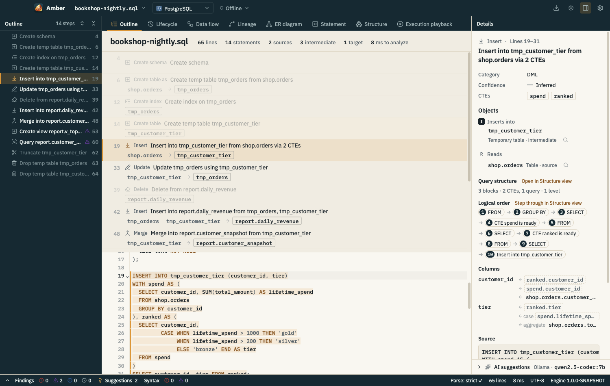
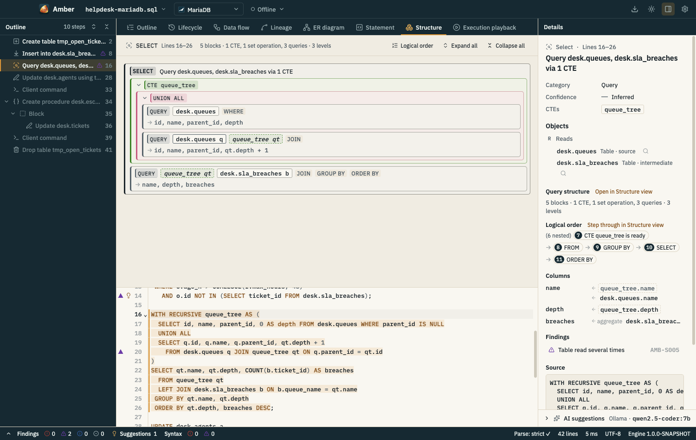
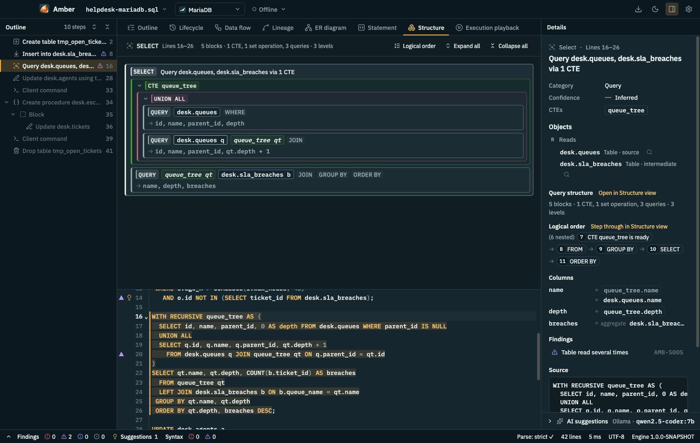
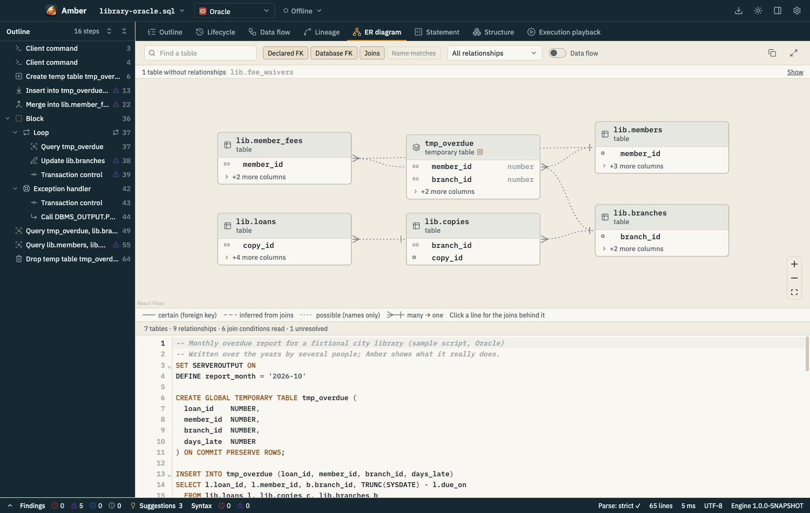

You inherited a 3,000-line nightly batch
Open it and read it like a table of contents: every statement summarized in one line, in order, nested through procedures and loops.
- Lifecycles show which step creates, fills, reads and drops each temp table.
- Structure turns the one monster query into nested boxes.
- The ER diagram recovers the tables and relationships the joins imply.







